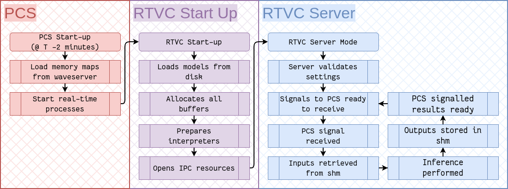

Figure 2: Overview of SAGE . Shared CLIP text branches encode frequency-enhanced temporal tokens and cross-variable context. Variable-specific text views use gated attention, while...
本轮最直接的聚变 AI 工程新增。模型不仅输出等离子体形状，还实时返回 Jacobian，进而形成虚拟回路矩阵和线圈电流请求，重点覆盖 C++ 推理服务、PCS 接口与实验前验证。
研究背景
由原简报的核心问题、选取理由和相关性整理，不替代原文背景综述。
聚变控制算法即使离线准确，也必须满足现有 PCS 接口、实时确定性、可验证性和安全集成要求。
从本日报的选取理由看，本轮最直接的聚变 AI 工程新增。模型不仅输出等离子体形状，还实时返回 Jacobian，进而形成虚拟回路矩阵和线圈电流请求，重点覆盖 C++ 推理服务、PCS 接口与实验前验证。
核心问题
如何部署神经网络等离子体形状代理，使其输出可直接参与实时线圈控制？
对当前主题的关键意义在于：为破裂预测建立同样的 C++ 推理接口与回放验证，记录 P95/P99 延迟、超时、降级策略和闭环模拟误差。
方法与关键创新

Figure 1 : RTVC Server architecture, showing related PCS initialisation (red), RTVC Server initialisation (purple), RTVC Server ”server mode” (blue). All memory allocations occur i...
Figure 1: Comparison of Continual Learning Paradigms. In Task-Incremental Learning ( TIL ), task boundaries are known , allowing for task-specific components during evaluation. Cla...
Figure 1: Overview of NeoTriFuse for reliability-aware multimodal fusion under heterogeneous missingness. The model integrates temporal HR and SpO 2 sequences, static clinical vari...
Figure 1: Overall framework of our proposed AVTP. Based on varying visual attention patterns across LVLMs, we first identify high-attention layers through sampling-based analysis. ...
Figure 9: Visualizing the mechanism of failure versus the mechanism of synergy. (a) The Pathology of Naive Concatenation: Treating heterogeneous signals (NMR/IR/MS) as a uniform se...
![Figure 1: Overview of NeoTriFuse for reliability-aware multimodal fusion under heterogeneous missingness. The model integrates temporal HR and SpO 2 sequences, static clinical variables, patient-level summary statistics, and a reliability vector derived from missingness and observation coverage. Local and global temporal encoders generate 𝐡 t e m p o r a l \mathbf{h}_{temporal} , while reliability-guided gates modulate temporal, static, and summary representations before fusion. The fused representation is used for mortality prediction with auxiliary length-of-stay prediction.](../assets/figures/e60b34308f9b7f1d.png)
![Figure 9: Visualizing the mechanism of failure versus the mechanism of synergy. (a) The Pathology of Naive Concatenation: Treating heterogeneous signals (NMR/IR/MS) as a uniform sequence leads to Modality Collapse . The shared parameter space succumbs to gradient conflicts (visualized as “Internal Chaos”), where high-redundancy modalities overwhelm high-density constraints, resulting in entangled representations and distorted molecular predictions. (b) The Solution via MM-Spectrum: We resolve this by introducing a Structured MoE Encoder . Through a modality-aware gating mechanism G ( x ) G(x) , the model dynamically disentangles information flows by routing tokens to functionally specialized modules—allocating Heavy Experts for complex topology inference and Light Experts for noise filtering—thereby restoring optimization stability and generation precision.](../assets/figures/6fec836ef9eb2522.png)